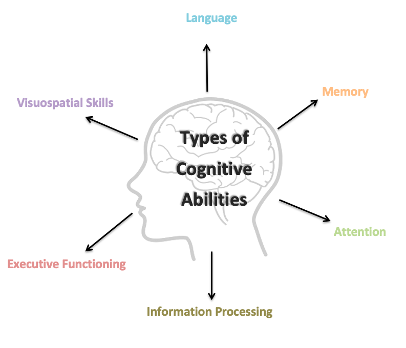

1 Cognitive Function
1.1 What are Cognitive Abilities?
The term cognitive ability is used to describe people’s thinking abilities; including problem solving, concentration and memory. Our minds are made up of lots of these abilities. We will explore some of these in more detail below; however, for the purpose of this group we will not cover all cognitive abilities. We all have our strengths as well as areas we find more difficult. Some of you may have completed a cognitive assessment before attending this group which helps us to identify these strengths and areas of difficulty.
The image below shows the different types of abilities:

1.2 Attention
Attention is a complex thinking skill. Attention describes the process through which you select something to concentrate on, filter out distractions, maintain concentration and switch it when necessary.
Types of Attention:
Focused or selective attention
This is your ability to choose something to pay attention to while filtering out and ignoring other stimuli like noise.
Sustained attention
This is your ability to keep concentrating on something over a period of time.
Divided attention
This your ability to pay attention to more than one thing at the same time.
Alternating attention
This your ability to switch your attention between two or more tasks.
- I find it hard to do more than one thing at a time like writing a message while talking on the phone.
- My mind often wanders when I read or watch TV. I’ll get to the end of a programme or page and have no idea what I read or watched.
- I start doing something but then get distracted and start doing something else. Then I can’t remember what I was meant to be doing.
1.3 Information Processing
Information processing refers to the process through which your mind takes in information, processes that information and acts on. We often talk about speed of information processing which refers to how quickly people are able to do this. For some people this may have slowed down which means that they find it hard to take new information in, especially when they’re trying to concentrate on lots of different things at once. Imagine that your mind works a bit like a computer.
If you have lots of programmes open at the same time this will put pressure on the computer and cause it to slow down. Equally, if you’re using one programme it might be overloaded with information. The same can happen with our minds, especially for people who have reduced speed of information processing. If you overload your mind, information might not go in properly.
- It takes me longer to answer questions now. If someone asks me something I have to stop and think about what it means before I can answer.
- I used to be able to do maths in my head really quickly but now it takes me ages.
- If someone’s explaining what something means I have to ask them to slow down and repeat it because it takes a while for the information to sink in.
1.4 Executive Functioning
Executive functioning is a broad term used to describe our ability to regulate and organise our thoughts and activities and effectively make decisions. It includes lots of different abilities such as:
Planning and Organising
The ability to plan a task including organising your time.
Sequencing
The ability to complete tasks in the right order.
Flexible thinking
The ability to think in a non-rigid way and adapt your thinking.
Self-monitoring
The ability to monitor your behaviour and responses and adapt these if necessary.
Problem solving
The ability to solve problems or tasks.
1.5 Session 2 Preview
We will also be talking a bit more about memory in the next session. At the start of the next session we will be doing a brief breathing exercise. This is because often when we attend the sessions there may be lots of things on our minds. Perhaps thoughts about what we’ve been doing, what we need to do, maybe some expectations or perhaps worries about what the group itself will be like. Our minds often wander and life is sometimes filled with stresses or worries. So we will do this breathing exercise to help us to feel more ‘grounded’ in the next session.